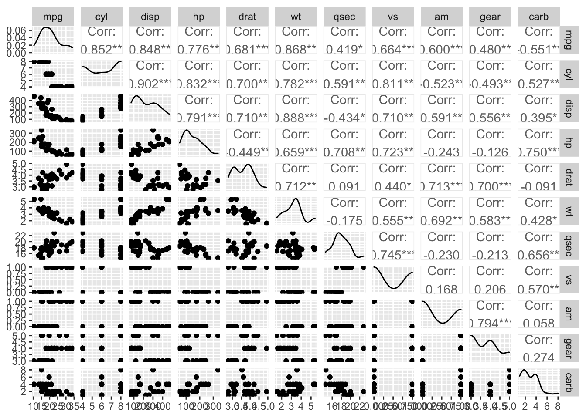
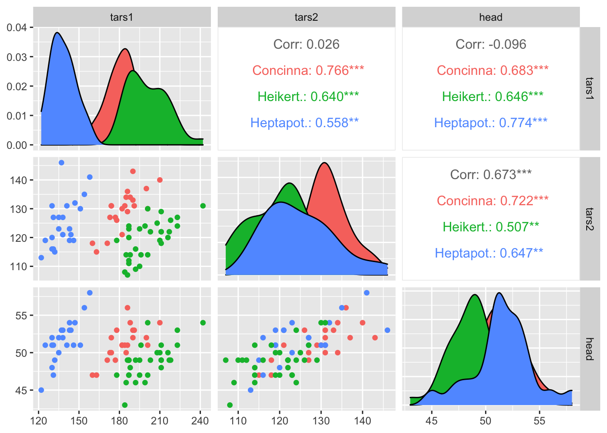
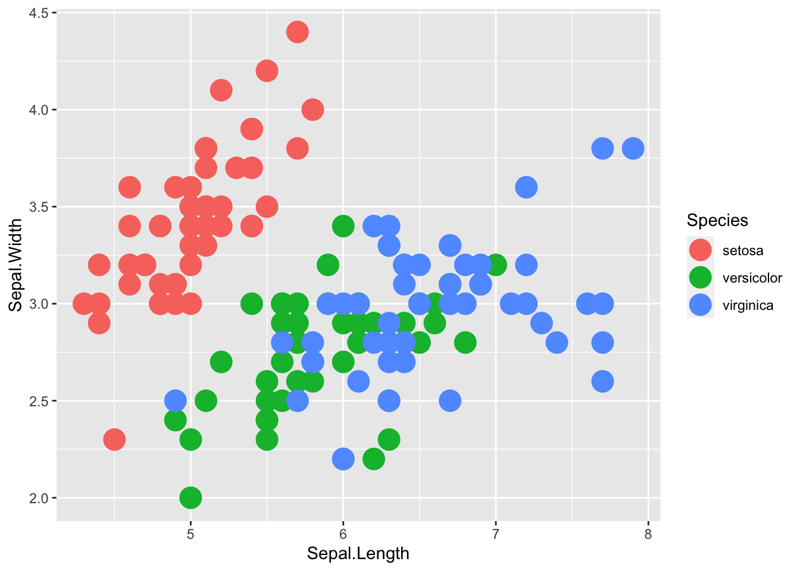
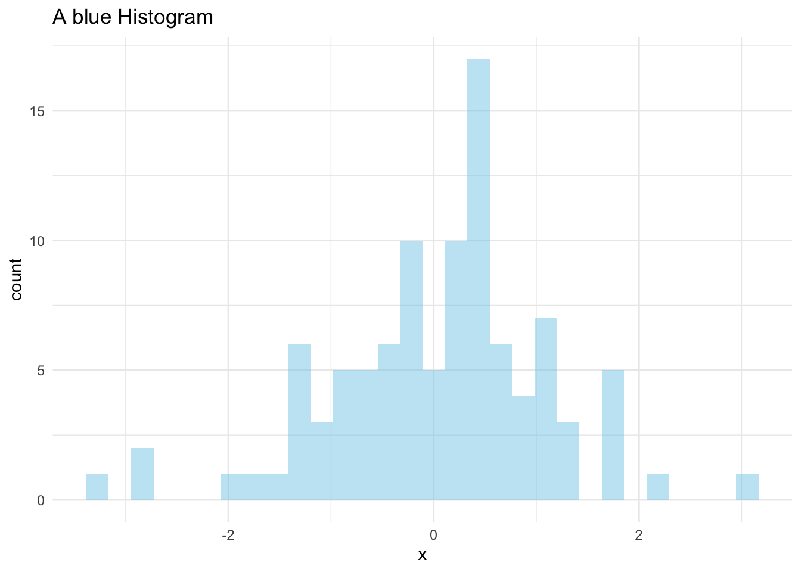
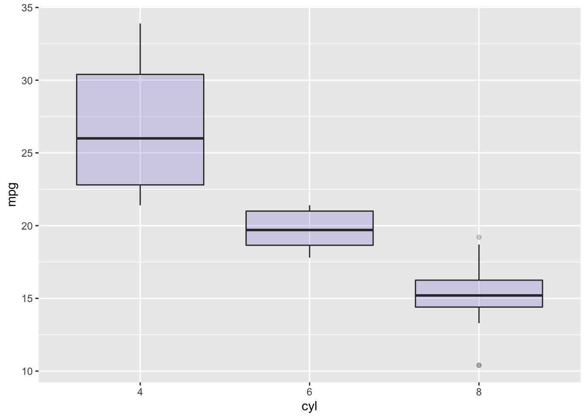
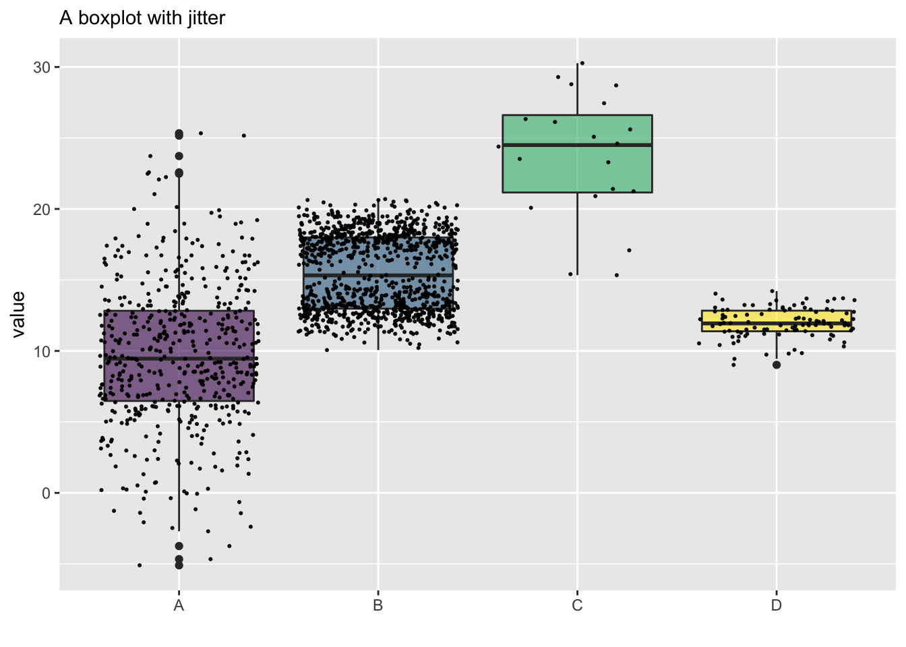
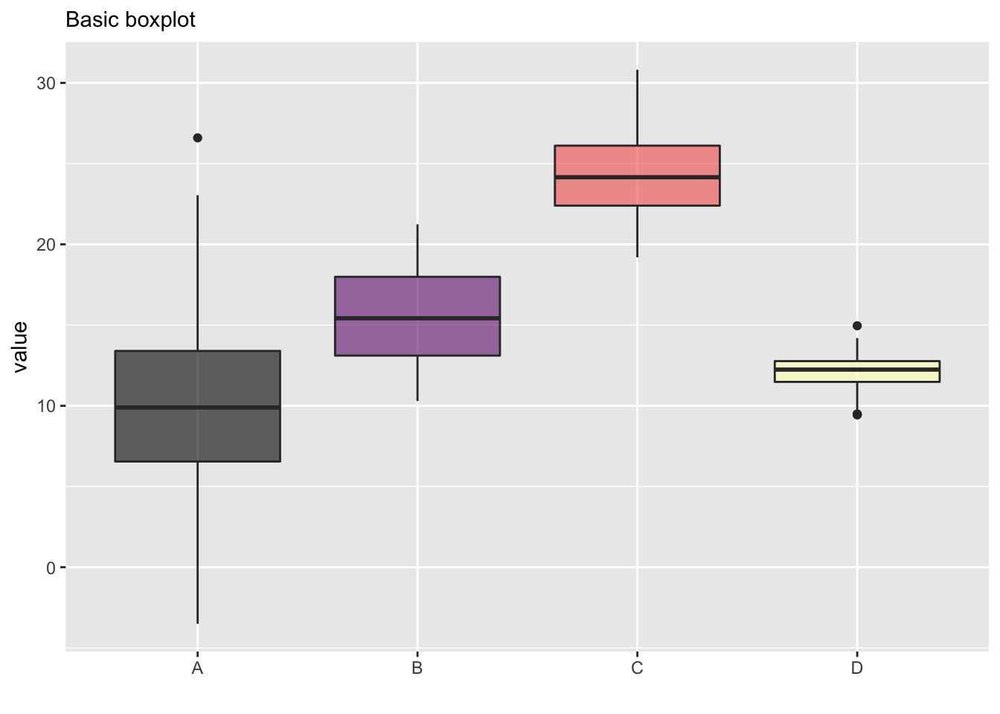
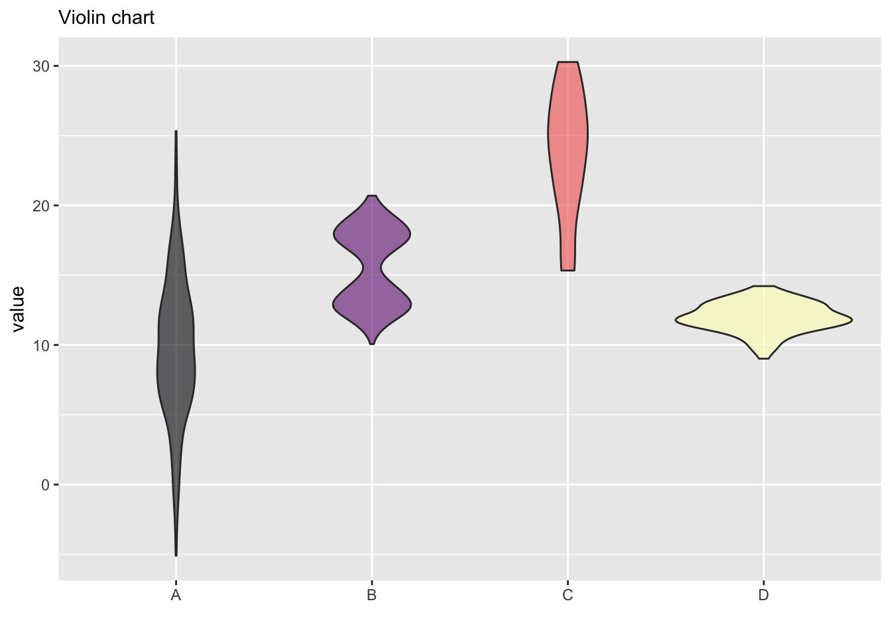
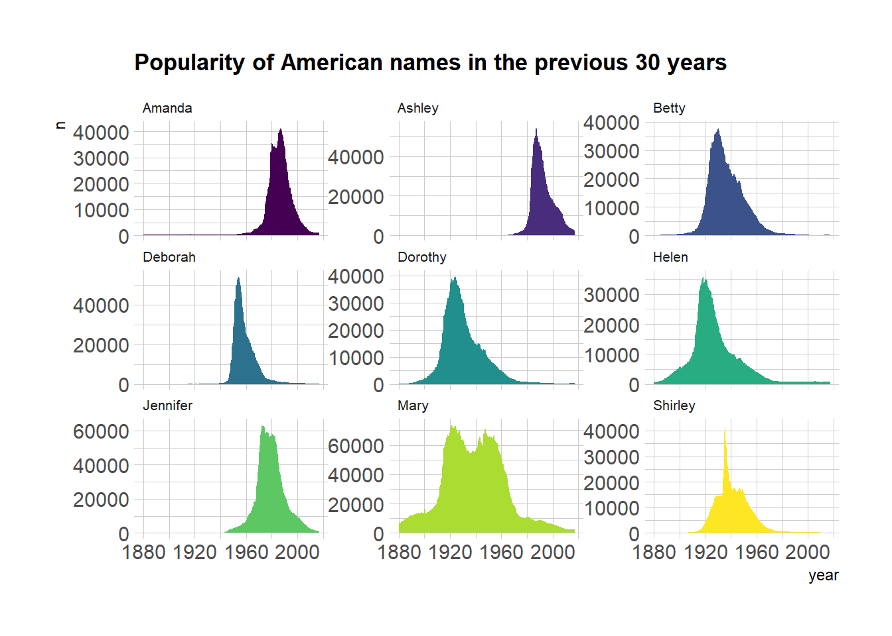
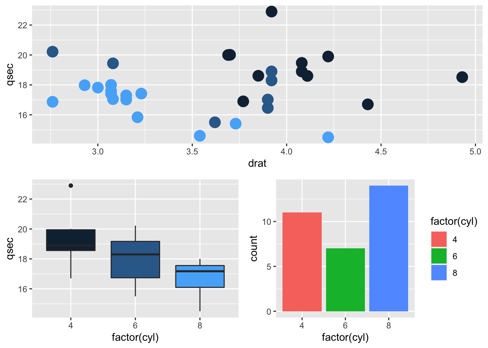

The mtcars dataset is a built-in dataset in R. It comprises 11 features of 32 automobiles from the 1974 Motor Trend US magazine.
# Data exploration
# View(mtcars)
# class(mtcars)
# ?mtcars
str(mtcars)## 'data.frame': 32 obs. of 11 variables:
## $ mpg : num 21 21 22.8 21.4 18.7 18.1 14.3 24.4 22.8 19.2 ...
## $ cyl : num 6 6 4 6 8 6 8 4 4 6 ...
## $ disp: num 160 160 108 258 360 ...
## $ hp : num 110 110 93 110 175 105 245 62 95 123 ...
## $ drat: num 3.9 3.9 3.85 3.08 3.15 2.76 3.21 3.69 3.92 3.92 ...
## $ wt : num 2.62 2.88 2.32 3.21 3.44 ...
## $ qsec: num 16.5 17 18.6 19.4 17 ...
## $ vs : num 0 0 1 1 0 1 0 1 1 1 ...
## $ am : num 1 1 1 0 0 0 0 0 0 0 ...
## $ gear: num 4 4 4 3 3 3 3 4 4 4 ...
## $ carb: num 4 4 1 1 2 1 4 2 2 4 ...library(GGally)
ggpairs(mtcars)
library(GGally)
# From the help page:
data(flea)
ggpairs(flea, columns = 2:4, ggplot2::aes(colour=species)) 
# load ggplot2
library(ggplot2)
#library(hrbrthemes)
# mtcars dataset is natively available in R
# head(mtcars)
# A basic scatterplot with color depending on Species
ggplot(iris, aes(x=Sepal.Length, y=Sepal.Width, color=Species)) +
geom_point(size=6) 
# theme_ipsum()# library & data
library(ggplot2)
data <- data.frame(x=rnorm(100))
# Basic plot with title
ggplot( data=data, aes(x=x)) +
geom_histogram(fill="skyblue", alpha=0.5) +
ggtitle("A blue Histogram") +
theme_minimal()
# Load ggplot2
library(ggplot2)
# The mtcars dataset is natively available
# head(mtcars)
# A really basic boxplot.
ggplot(mtcars, aes(x=as.factor(cyl), y=mpg)) +
geom_boxplot(fill="slateblue", alpha=0.2) +
xlab("cyl")
library(tidyverse)
#library(hrbrthemes)
library(viridis)
# create a dataset
data <- data.frame(
name=c( rep("A",500), rep("B",500), rep("B",500), rep("C",20), rep('D', 100) ),
value=c( rnorm(500, 10, 5), rnorm(500, 13, 1), rnorm(500, 18, 1), rnorm(20, 25, 4), rnorm(100, 12, 1) )
)
# Plot
data %>%
ggplot( aes(x=name, y=value, fill=name)) +
geom_boxplot() +
scale_fill_viridis(discrete = TRUE, alpha=0.6) +
geom_jitter(color="black", size=0.4, alpha=0.9) +
# theme_ipsum() +
theme(
legend.position="none",
plot.title = element_text(size=11)
) +
ggtitle("A boxplot with jitter") +
xlab("")
# Boxplot basic
data %>%
ggplot( aes(x=name, y=value, fill=name)) +
geom_boxplot() +
scale_fill_viridis(discrete = TRUE, alpha=0.6, option="A") +
# theme_ipsum() +
theme(
legend.position="none",
plot.title = element_text(size=11)
) +
ggtitle("Basic boxplot") +
xlab("")
# Violin basic
data %>%
ggplot( aes(x=name, y=value, fill=name)) +
geom_violin() +
scale_fill_viridis(discrete = TRUE, alpha=0.6, option="A") +
# theme_ipsum() +
theme(
legend.position="none",
plot.title = element_text(size=11)
) +
ggtitle("Violin chart") +
xlab("")
# Libraries
library(tidyverse)
#library(hrbrthemes)
library(babynames)
library(viridis)
# Load dataset from github
data <- read.table("https://raw.githubusercontent.com/holtzy/data_to_viz/master/Example_dataset/3_TwoNumOrdered.csv", header=T)
data$date <- as.Date(data$date)
# Load dataset from github
don <- babynames %>%
filter(name %in% c("Ashley", "Amanda", "Mary", "Deborah", "Dorothy", "Betty", "Helen", "Jennifer", "Shirley")) %>%
filter(sex=="F")
# Plot
don %>%
ggplot( aes(x=year, y=n, group=name, fill=name)) +
geom_area() +
scale_fill_viridis(discrete = TRUE) +
theme(legend.position="none") +
ggtitle("Popularity of American names in the previous 30 years") +
# theme_ipsum() +
theme(
legend.position="none",
panel.spacing = unit(0, "lines"),
strip.text.x = element_text(size = 8),
plot.title = element_text(size=13)
) +
facet_wrap(~name, scale="free_y")
library(ggplot2)
library(gridExtra)
# Make 3 simple graphics:
g1 <- ggplot(mtcars, aes(x=qsec)) + geom_density(fill="slateblue")
g2 <- ggplot(mtcars, aes(x=drat, y=qsec, color=cyl)) + geom_point(size=5) + theme(legend.position="none")
g3 <- ggplot(mtcars, aes(x=factor(cyl), y=qsec, fill=cyl)) + geom_boxplot() + theme(legend.position="none")
g4 <- ggplot(mtcars , aes(x=factor(cyl), fill=factor(cyl))) + geom_bar()
# Plots
grid.arrange(g2, arrangeGrob(g3, g4, ncol=2), nrow = 2)